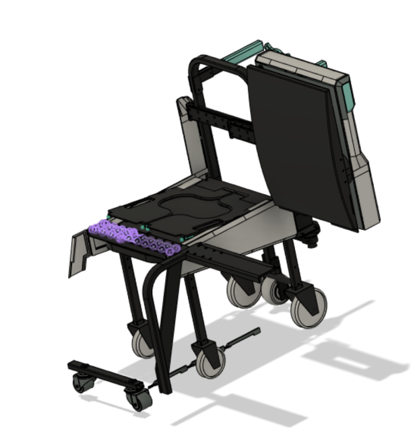
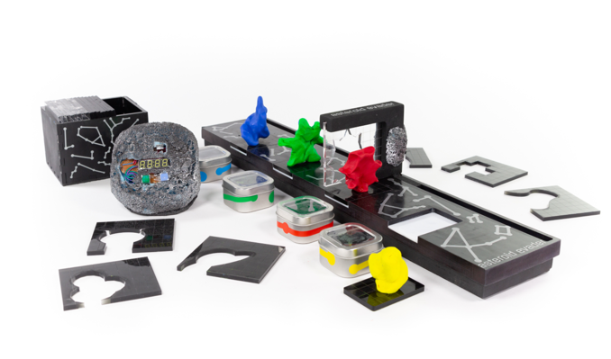
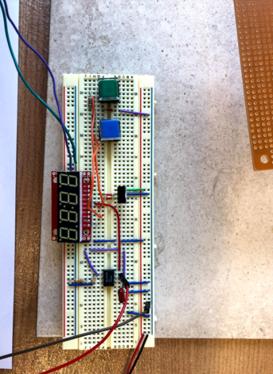

Coursework
Capstone Projects, Labs, Writeups
6.1151 : MicroComputer Project Laboratory (Spring 2022)
Objective:
While taking MIT’s 6.1151, each student was tasked with creating a final project that would serve as the cumulation of what we had learned about embedded microcontrollers, using either the 8051 or PSoC (Programmable System on Chip). The objective of my particular project was to build an assortment of games that would take advantage of the modularity and flexibility of the PSoC5. The games would be played using an accompanying wireless controller run on a PSoC5LP Stick. Ideally, the two processors would run separate programs, but would operate smoothly enough not to impede gameplay. The system should be able to run three distinct games, including TIC-TAC-TOE, Pong, and a simple version of Duck Hunt.
Solution:
My design featured two distinct parts. A wireless controller powered by a PSoC Stick and a Receiver/VGA Connector attached to the main PSoC5. The PSoC Stick encoded controller button states from the user and would transmit them wirelessly to the PSoC5 responsible for running game mechanics and updating the associated monitor.
Applied Skills: C (Programming), Assembly (Programming), Circuit Design, Analysis, and Construction
2.009: Project Engineering Processes (Fall 2021)
Objective: As a student in 2.009, MIT’s Mechanical Engineering capstone class, teams of 20 students work together in Pappalardo Lab to develop and present a marketable product. Over the course of the semester, students experience the design process of a product development firm, ranging from ideation, studying market data, building models, and ultimately the construction of a quality alpha prototype. Ultimately, the semester culminates in a product demonstration and presentation broadcasted online.
As a student in 2.009, MIT’s Mechanical Engineering capstone class, teams of 20 students work together in Pappalardo Lab to develop and present a marketable product. Over the course of the semester, students experience the design process of a product development firm, ranging from ideation, studying market data, building models, and ultimately the construction of a quality alpha prototype. Ultimately, the semester culminates in a product demonstration and presentation broadcasted online.
Solution:
My team (Silver) designed and manufactured Aisle Assist, a compact aisle wheelchair that eliminates the uncomfortable lifting of paraplegic flyers from their wheelchairs to their airplane seat. It takes advantage of removable, height adjustable seat panels and a backrest attached to linear rails, to gently slide and deposit users onto their aisle seat.
 The chair works by lifting the wheelchair seat above the plane seat, sliding the user over, and retracting the backrest and seat panels once the user is comfortable. Linear rails and carriages enable the sliding action while the seat panels are raised with a winch situated behind the seat. With a 10:1 gear ratio and non-back drivable winch, the lifting mechanism is safe and requires 10 pounds of force from the flight attendant. The design was also included a deployable stabilization leg to prevent the chair from tipping during the transfer process.
My primary responsibilities included selecting linear rails given our load conditions. Since the system is essentially cantilevered, I was responsible for loading and bending calculations to prevent deflection and other beam failure modes. Additionally, as a member of the backrest assembly, I was responsible for the design and machining of key structural components on the mill, lathe, and waterjet. I presented during our teams technical review and helped with other deliverables throughout the semester. As our team’s financial officer, I was accountable for managing team finances, tracking expenses, and placing part orders.
Various Prototypes, Back Winch Assembly:
Applied Skills: Design and Manufacturing, MATLAB, Computer Aided Design, Machining/ Fabrication, Autodesk Fusion
6.131: Power Electronics Laboratory (Fall 2021)
Objective:
While taking MIT’s 6.131, students learn to design and build power electronic circuits through a variety of labs. These labs include the construction of drive circuitry for an electric go-cart, flash strobes, computer power supplies, three-phase inverters for AC motors, and resonant drives for lamp ballasts. The semester ends with a final project in an area of interest to the student that incorporates the semesters exploration into the analysis of such systems.
36 V Go-Cart Drive Circuitry
Buck Converter Drive for Go Cart DC Drive Motor MOSFET Drivers run on 30 kHz alternate delay signals. L, C low pass filter, smoothed voltage powers Go Cart Motor
Flourescent Lamp Ballast
Resonant Converter for Fluorescent Lamp Ballast. Resonant Frequency achieved between 30-40 kHz
200 V DC Power Supply
200 V DC Power Supply with Transformer and Clamp Operates at CCM, with a nominal voltage across Cclamp of 120 V
DCM Boost LED Driver/Desk Lamp
DC Motor Build
Three Phase Inverter, Induction Motor
Finite State Machine Drive for Three Phase Bridge Motor Drive for Induction Motor. Driven by 21 kHz PWM Oscillator with a variable duty cycle
Bi-Directional Motor Controller
For my final project, I dedicated the last four weeks of the semester implementing bi-directional motor control, with a feedback loop to implement cruise control. Essentially, the circuit would spin the motor in both directions, and after a button was pressed, the motor would try its best to keep its current speed constant even after loading. To do this, I built an H-Bridge, with PWM motor control and an adjustable duty cycle. Subsequently, I used an ADC and a DAC as a sample and hold, to record the back EMF of the motor once the button was pressed. Then using this as the reference voltage, I designed a type II compensator with the desired gains to automatically ramp up the duty cycle when necessary.
Applied Skills: Circuit Construction, Analysis and Design
6.012: Nanoelectronics and Computation Systems (Spring 2022)
Objective:
In 6.012, Nanoelectronics and Computation Systems, students learn the basic concepts of semiconductor physics and are expected to be able to analyze and predict device performance based on scaling laws and physical structure. At the end of the semester, students are given an existing ARM microprocessor structure and are asked to propose an energy efficient design that meets spec and operates at 200 MHz.
Solution:
Over the last two weeks of the semester, my group made a total of 4 changes to the existing semiconductor design to optimize its performance. We decreased the thickness of the oxide to 4 nm in order to reduce the impact of parasitic capacitances on our MOSFET. Changing the material composition of our spacers to one with a lower permittivity helped reduce our leakage capacitance.
We also increased the doping concentration of our Source and Drain to the upper limit to increase the number of carriers in our channel, and by extension our current. Finally, we decreased our operating voltage to 1.75 V to meet spec.
Microprocessor performance was modeled in Sentaurus and calculations for gate capacitance were completed in MATLAB. For more detail on the analysis, see the paper below.
Applied Skills: MATLAB, Sentaurus TCAD
2.12: Introduction to Robotics (Spring 2021)
Tuned a PID Controller and used arm kinematics to control the motion of robot arm, and draw desired shapes.
Used ROS, Computer Vision/ Image Processing to control UR5e robot arm.
Correctly identified colored bottles and transported them onto a basket with the UR5e arm for term project.
Term Project attempted to mimic the control of telepresence robots in hospitals.
Applied Skills: ROS, OpenCV, Python (Programming)
2.008 : Design and Manufacturing II (Spring 2021)
Objective:
As a student in 2.008 (Design and Manufacturing II), I worked in a team of 4 other undergraduate students to design and manufacture 50 plastic yo-yos over the course of the semester.
Taking inspiration from the CITGO Sign in Boston, my team designed the yo-yos pictured below.

I designed the aluminum molds for these parts in Autodesk Fusion and manufactured the tooling on the HAAS CNC. I also helped thermoform the letters and punched out the desired features using a die. The majority of the manufacturing took place at MIT’s LMP (Laboratory for Manufacturing and Productivity).
Applied Skills: Design and Manufacturing, Computer Aided Design, Fabrication and Machining, Autodesk Fusion
2.086: Numerical Computation for Mechanical Engineers (Spring 2020)
Objective:
While taking MIT’s 2.086: Numerical Computation for Mechanical Engineers, students focus on numerical methods, linear and differential equations and develop familiarity with MATLAB programming. At the end of the semester, students are asked to use MATLAB to solve a physical problem in the real world.
Solution:
For our term project, I worked in a group of three to develop MATLAB code that would mimic the functionality of an Etch A Sketch, a common children’s drawing device that uses two rotating knobs to draw on a screen. Ideally, the goal of the project was to generate a script that would take in an input image file and output functional G-code that could be used to drive the Etch A Sketch knobs.
However, since an Etch A Sketch’s pen never leaves the page, a method for connecting the segments into one continuous line was needed. The algorithm optimized the path by first checking for nearest neighbors, and then opting to minimize the length of additional line segments needed to connect the image. My group then converted the subsequent array of line endpoints, into usable G-code that would actuate stepper motors attached to the Etch A Sketch’s knobs.
Applied Skills: MATLAB
2.671: Measurement and Instrumentation (Fall 2020)
Objective:
In MIT’s 2.671 Measurement and Instrumentation course, students the semester exploring measurement methods and experimental techniques typically encountered by mechanical engineers. Concurrently, students are asked to take measurements and write a formal research paper on a topic of their choice. The semester ends with a formal poster session in which students are asked to share their work with other students and faculty.
Solution:
As I was taking the course during COVID, the scope of my project was limited to what I had readily available at home. Combining my love with basketball and engineering, I decided to explore the relationship between arm angle and jump force on basketball shot distance. Changes in arm angle were measured using a Vernier Goniometer, and two force plates under the players feet were used to assess applied jumping force. Ultimately, it was found that there was a positive linear correlation between arm angular velocity and distance from the basket. Jumping Force also generally increased as distance from the basket increased. Missed shots could be identified only through changes in angular velocity. Additional investigation is still required on the impact of lateral changes in arm angle, player shot mechanics, and shot distances exceeding six meters.
Applied Skills: Measurement and Instrumentation, Data Analysis, MATLAB
2.00b : Toy Product Design (Spring 2019)
Objective:
As a student in 2.00b, MIT’s Toy Product Design course, students work in teams of 5 to produce a toy marketed for play and entertainment. With a focus on prototyping, aesthetic design, and safety, students present a novel product targeted towards young children at the end of the semester.

Solution:
My team (Llama Team) designed and fabricated Asteroid Evader, a board game that takes inspiration from Cartoon Network’s Hole in the Wall. Players are tasked with recreating shapes shown on the removable slides out of Play-Doh before the timer runs out. At the end of each round, players retract the slider to see if their molded shape makes the cut.

The game consists of over 20 unique shapes, cut out of ¼” acrylic sheets, an ABS 3-D printed slider, and milled plastic game board. The timer was housed in foam sprayed with acetone to mimic the surface features of an asteroid.
Our product was tested with children in our target age group at the Children’s Museum of Action in Boston. Some of my personal responsibilities included the electronics (designed circuit and housing for the timer), and the creation of unique geometries for the removable slides.
Applied Skills: SolidWorks, Manufacturing, Simple Circuit Design
See our Final Presentation Here: